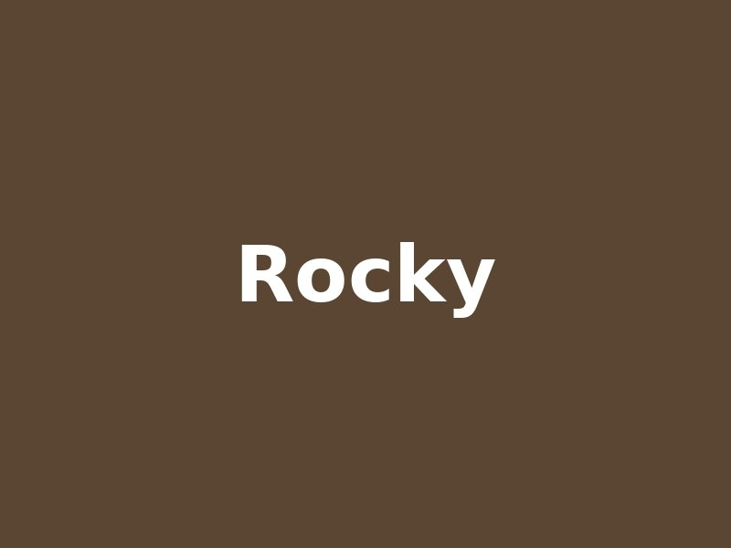

Toby
Urgente 2 años · Tamaño mediano
Adoptar a TobyRescatamos, cuidamos y buscamos hogar a perros y gatos abandonados.
Urgente 2 años · Tamaño mediano
Adoptar a TobyBebé 8 meses · Tamaño pequeño
Adoptar a Luna
6 años · Tamaño grande
Adoptar a Rocky